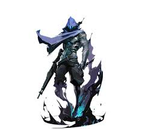

Valorant é um jogo do genero fps, em uma partida são 5 jogadores com 5 agente diferentes para cada time, cada um com suas habilidades e funções.

Cypher é um agente sentinela, o trabalho dele é spotar inimigos e controlar área para a vantagem da equipe, usando seus fios para pegar seus oponentes e as vezes garantir uma eliminação, na sua ultimate, ele lança seu chápeu em um corpo de um inimigo morto para descobrir a localização de todos os agentes inimigos.

omen é um agente da classe controlador, cujo seu objetivo é fechar áreas com smokes tanto para avançar tanto para evitar qualquer tipo de avanço inimigo, dificultando a entrada de bombs e também dificultar aos inimigos defender bombs, sua ultimate é um teleporte, onde ele pode teleportar para qualquer lado do mapa, podendo interagir com objetos, podendo ser usada para pegar um melhor posicionamento, garantir uma kill, ou pegar a spike.
.jpeg)
Jett é um agente de classe duelista, o objetivo desta classe é garantir kills individuais com valor, ela tem como habilidade uma mobilidade ágil porém limitada, ótima para garantir kills individuais e recuar rápidamente, fazendo ela uma ótima agente para eliminar alguns agentes inimigos importantes, sua ultimate, são 5 adagas que não tem qualquer tipo de recoil ou margém de erro, sempre irão reto mesmo com o player se mechendo com várias habilidades, a cada kill, todas as 5 adagas são recarregadas.
.jpeg)
sage é um agente de classe sentinela, como o cypher, porém com habilidades e funcionalidades diferentes, sage é um agente com habilidades focadas em cura e suporte, com 2 habilidades de suporte e 2 de controle de área, sua ultimate é uma habilidade de suporte, com ela você consegue reviver um aliado
.jpeg)
gekko é um agente iniciador, suas habilidades são feitas para abrir espaço para o time adentrar áreas espotando inimigos fácilmente, stunando ou cegando eles, ele tem 2 habilidades para iniciar, 1 para controle e 1 para plantar a bomba ou talvez garantir uma kill, sua ultimate, ele lança a trash para pegar os inimigos, controlando ela durante o uso, caso ela acerte alguém o inimigo fica impossibilitado de atacar ou fazer qualquer ação durante um longo periodo de tempo.